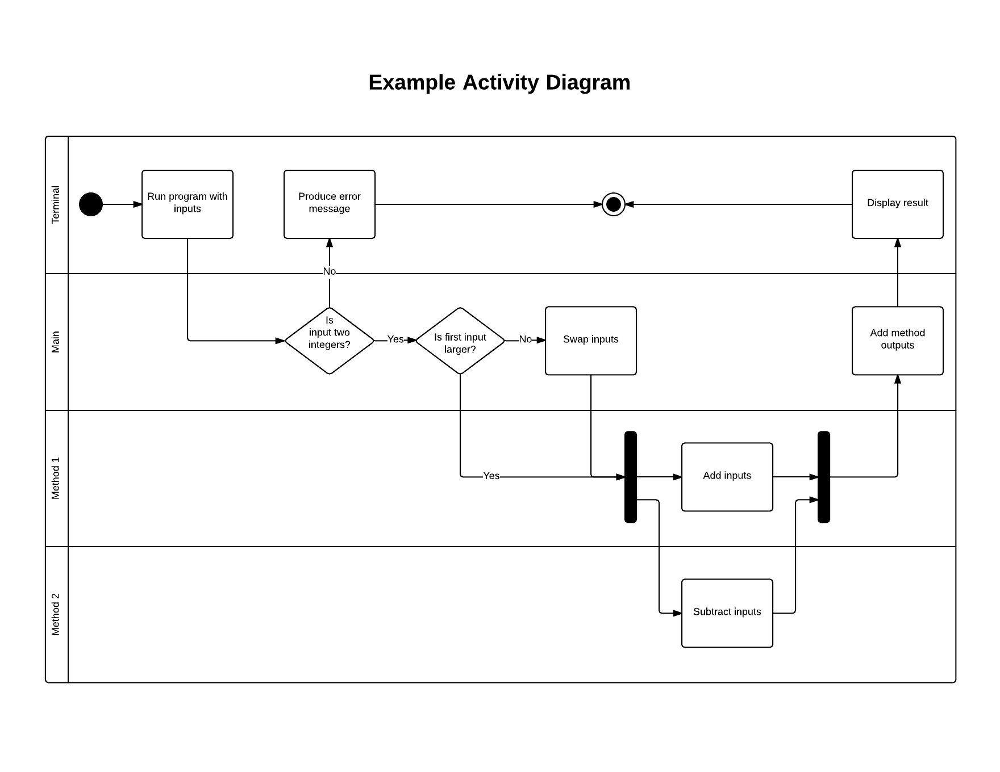
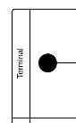
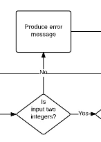
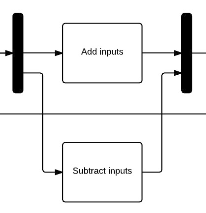
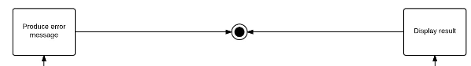

An activity diagram is dynamic because it shows the flow of logic and processes that we wish to accomplish for each use case that we are modeling. An activity diagram should still be high level design. We don't need to specify classes or other details yet.
Let's look at a basic nonsensical java program and its accociated activity diagram. We'll break it down piece-by-piece to learn what each piece of the diagram means.
public class slide2 {
public static int method1(int x, int y) {
return x + y;
}
public static int method2(int x, int y) {
return x - y;
}
public static void main(String[] args) {
if (args.length != 2) {
System.out.println("Requires two int inputs");
return;
}
try {
int firstArg = Integer.parseInt(args[0]);
int secondArg = Integer.parseInt(args[1]);
if ( firstArg < secondArg ) {
int temp = firstArg;
firstArg = secondArg;
secondArg = temp;
}
int out1 = method1(firstArg, secondArg);
int out2 = method2(firstArg, secondArg);
int out = out1 + out2;
System.out.println("Two times the larger input is " + out);
return;
} catch (NumberFormatException e) {
System.out.println("Requires two int inputs");
System.exit(1);
}
}
}

We start the activity diagram flow at the filled circle. This is the start point. We can see that there are four horizontal rectangles that partition the diagram. These are swim lanes. They illustrate whose responsibility it is to do which activity. The starting point is in the terminal's swim lane so the starting responsibility belongs to the terminal.

Next, we encounter small rounded rectangles and diamonds. The rounded rectanges are processes. They are activities to be performed by the responsibile party of the swim lane. For example, "produce error message" will be the print statement performed by the terminal if necessary. Processes always take the verb-noun form. The diamonds are decision points. A decision branches into multiple outputs based on the input. For example, if input is not two integers, then we would proceed along the no branch. Decision points always take the form of a question.

The two solid bars in diagram represent firstly a fork and then secondly a join. These are spots where the code may be run concurrently. Because "add inputs" in method 1 does not depend on "subtract inputs" in method 2, both processes can execute simultaneously.

Finally, the bull's eye represents the end of our activity diagram. Because our code contains two return statements, there are two arrows pointing to the finish point of our diagram.

The next lower level diagrams are class diagrams
Or return to the table of contents.